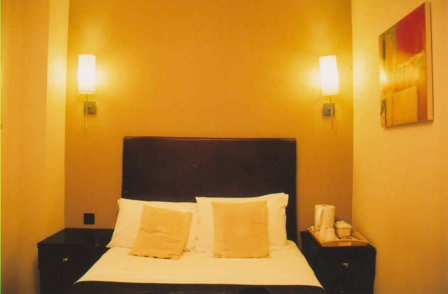

Blue Light Glasses and Sleep: Does the Evidence Hold Up?
They're marketed as an easy fix for restless nights spent scrolling in bed. Here's what the actual trials, and the most rigorous review of them, found.

Key takeaways
- The evidence is real but thin. A handful of small, short trials show mixed-to-modest benefits, not a proven fix for poor sleep.
- The best review available rates it "very low certainty." A 2023 Cochrane analysis of 17 trials found conflicting results on sleep quality.
- They work, when they do, on one input only. Blue light is one signal your circadian clock reads; glasses don't address the rest.
- Eye strain is a separate, weaker claim. Major eye-health groups don't recommend them for that reason.
- Dimming screens and a steady schedule still beat any lens. Glasses are a low-risk add-on, not a replacement for sleep hygiene.
Blue light glasses may modestly help some people fall asleep, mainly by cutting how much evening light reaches the eyes in the hour or two before bed. The research behind that claim is small: a few short trials show real but inconsistent effects, and the most thorough review to date calls the sleep evidence "very low certainty." Treat them as a cheap, low-risk add-on, not a cure for bad sleep.
What exactly are blue light glasses?
"Blue light glasses" covers two different products sold for two different reasons. One type has a nearly clear coating marketed for daytime computer use, aimed at reducing eye strain. The other has an amber or orange tint, sold for evening wear, aimed at protecting sleep. They're often lumped together in marketing copy, but almost all of the sleep research below tested the second kind specifically.
The tint matters because it determines how much blue wavelength light actually gets filtered out. A barely-tinted lens blocks very little; a deep amber lens blocks a lot more, at the cost of making screens and rooms look noticeably orange. That tradeoff is part of why the darker lenses show up in sleep studies and the clear ones mostly don't.
How is blue light supposed to affect sleep in the first place?
Your eyes contain specialized retinal cells that are most sensitive to blue wavelengths, and they feed directly into the part of the brain that runs your circadian clock. Light exposure there, especially in the evening, suppresses the release of melatonin and signals the brain to stay alert. Harvard Health's overview of the topic notes that blue light can suppress melatonin for roughly twice as long as comparably bright green light, which is one reason screens and LED bulbs get singled out more than, say, candlelight.
That's the real, well-established mechanism. Where things get shakier is the next step: does filtering some of that light through a pair of glasses translate into measurably better sleep? That's a smaller, newer body of research, and it doesn't all point the same direction.
What does the research say about blue light glasses and sleep?
Three sources carry the most weight here, and they don't fully agree. In a small 2015 trial, thirteen teenage boys wore either blue-blocking or clear lenses during evening screen use in a crossover design. The blue-blocking lenses meaningfully reduced screen-related melatonin suppression and increased subjective sleepiness before bed, but didn't significantly change measured sleep stages the following night (van der Lely et al., 2015).
A 2018 pilot trial took a more direct approach to insomnia itself. Fourteen adults with insomnia symptoms wore amber lenses or clear placebo lenses each night for a week, then switched. On amber-lens weeks, people reported falling asleep faster, sleeping more soundly and scoring better on a standard sleep-and-mood questionnaire; an actigraphy tracker, a more objective measure, picked up a smaller but still significant bump in total sleep time (Shechter et al., 2018). The authors were careful to call it a pilot study and asked for it to be replicated at a larger scale.
That replication, in a sense, arrived as a systematic review rather than a single bigger trial. In 2023, Cochrane researchers pooled 17 randomized trials covering 619 adults, with study lengths ranging from under a day to five weeks. Their conclusion was blunt: the evidence on whether blue-light filtering lenses beat ordinary lenses for sleep quality is "very low certainty," with results split roughly evenly across the six trials that measured it (Singh et al., 2023). Put plainly: nobody has shown this works reliably, and nobody has ruled it out either.
| Study | Design & sample | What it found |
|---|---|---|
| van der Lely et al., 2015 | Crossover trial, 13 male teens | Less melatonin suppression, more pre-bed sleepiness; no change in measured sleep stages |
| Shechter et al., 2018 | Pilot crossover RCT, 14 adults with insomnia symptoms | Better self-reported sleep quality and duration; a smaller, still-significant gain on actigraphy |
| Singh et al. (Cochrane), 2023 | Systematic review, 17 trials, 619 adults | Conflicting results across trials; sleep benefit rated "very low certainty" |
Do blue light glasses also reduce eye strain?
That's a separate claim, and it's weaker. The American Academy of Ophthalmology doesn't recommend any special eyewear for computer-related eye strain, pointing instead to how people use screens, infrequent blinking, poor lighting, bad posture, as the actual cause. A 2023 Cochrane review reached a similar conclusion on eye strain specifically: the lenses probably don't reduce it over short computer sessions.
So if a pair of blue-light glasses is marketed mainly as a daytime eye-strain fix, the evidence doesn't back that up well. The sleep-related claim, filtering evening light, is the one with at least some supportive trial data behind it, thin as it is.
What happens to focus and memory when blue light wrecks your sleep?
This is where the stakes go up. Fragmented or shortened sleep doesn't just leave you tired; it shows up the next day as slower thinking, shorter attention and the kind of forgetfulness people describe as brain fog. Our guide to what causes brain fog and how to clear it covers that link in more depth. None of this means blue light alone is responsible for a foggy week. It means protecting sleep, by whatever combination of methods actually works for you, has a payoff well beyond feeling less tired.
Who might reasonably want to try them?
People who aren't willing or able to put screens away before bed are the most sensible candidates. If you're the kind of person who wakes up tired after a full night, scrolling until the lights go off, a cheap pair of amber lenses is a low-effort change worth testing for a week or two; our piece on why you wake up tired after 8 hours of sleep walks through other common causes worth ruling out at the same time. Night-shift workers and people with delayed sleep schedules, who need to dim artificial alerting signals during their "evening," are another group the research specifically targets.
Who should probably skip them, or keep expectations modest?
If you already avoid screens for an hour or two before bed, use night mode, and keep your bedroom dark, you've likely captured most of the realistic benefit already; adding glasses on top probably won't move the needle much. The same goes if your main complaint isn't falling asleep but staying asleep, waking at 3 a.m., or simply not getting enough hours. Light exposure is one variable among several, and if sleep quantity is the actual problem, see is 6 hours of sleep enough for what the research says there. Glasses won't substitute for more time in bed.
What has stronger evidence than the glasses themselves?
A consistent wake time, a cool dark bedroom, and cutting caffeine and alcohol in the hours before bed all have deeper, more consistent research behind them than any tinted lens. Our sleep hygiene checklist covers the full list in practical terms, and the ideal bedroom temperature for sleep is one piece of that worth getting right on its own. Think of blue light glasses as a small addition to that foundation, not a shortcut around building it.
When should you see a doctor about sleep problems instead of buying gadgets?
See a doctor if poor sleep has lasted more than a few weeks, if you're exhausted despite a full night in bed, or if loud snoring, gasping, or pauses in breathing have been noticed by a partner. Those patterns point toward something a pair of glasses can't fix, and they deserve a real evaluation rather than another gadget. Persistent insomnia that doesn't respond to basic habit changes is also worth bringing up; effective, structured treatments exist beyond anything sold online.
Frequently asked questions
Do blue light glasses block melatonin suppression completely?
No. They reduce it, not eliminate it. Lenses only filter light reaching the eyes, and some blue wavelengths still get through, plus any overhead or ambient light in the room keeps reaching your eyes unfiltered unless you also dim the room.
Is amber tint better than a clear blue-light coating?
For nighttime use, amber or orange-tinted lenses filter more blue wavelength light than the nearly clear coatings sold for daytime computer use, which is why most of the sleep research uses amber lenses specifically. Clear coatings are marketed mainly for eye comfort, not sleep.
Can kids wear blue light glasses to sleep better?
There's no dedicated pediatric research on this, so we can't make a specific claim. If a child's screen use close to bedtime is already a concern, cutting the screen time itself is the better-supported first step; talk to a pediatrician before relying on glasses alone.
Does night mode on your phone work as well as the glasses?
Night mode shifts a screen's color temperature warmer, which is a similar idea applied at the source instead of at your eyes. Neither has been shown to outperform the other directly, and using both, warmer screens plus amber lenses, filters more than either alone.
How soon would you notice a difference, if any?
In the trials that found an effect, participants wore the lenses nightly for about a week before reporting change. That's a reasonable trial period to judge for yourself, rather than expecting a difference after one night.
Do blue light glasses cause any side effects?
Reported complaints are mild and uncommon: occasional headache, low mood or general discomfort wearing the glasses, and those same complaints showed up almost as often with plain, non-filtering lenses in controlled comparisons. There's no evidence of a meaningful safety risk.
Should you wear them during the day too?
Probably not. Daytime blue light, including sunlight, helps keep your circadian clock on schedule, so filtering it all day could work against you. The sleep research specifically tests evening and nighttime wear, in the hour or two before bed.
- Shechter A et al. Blocking nocturnal blue light for insomnia: A randomized controlled trial. J Psychiatr Res. 2018.
- van der Lely S et al. Blue blocker glasses as a countermeasure for alerting effects of evening LED screen exposure in male teenagers. J Adolesc Health. 2015.
- Singh S et al. Blue-light filtering spectacle lenses for visual performance, sleep, and macular health in adults. Cochrane Database Syst Rev. 2023.
- Harvard Health: Can blue light-blocking glasses improve your sleep?
Related: Sleep hygiene checklist · Why you wake up tired after 8 hours · Is 6 hours of sleep enough? · Best bedroom temperature for sleep
Image: The Integer Club / Wikimedia Commons / CC BY 2.0